Насосно-компресорные трубы
Насосно-компресорные трубы б/у.
Размеры:
- 60x5 mm
- 73x5.5 mm
- 89x6.5 mm
- 89x7.34 mm
Наши дополнительные услуги:
- Обрезание муфт и резьб
- Резка с фиксированной длиной
- Переупаковка в соответствии с лимитами веса
- Определение твердости стали и сортировка по классам N80, J55, K55)
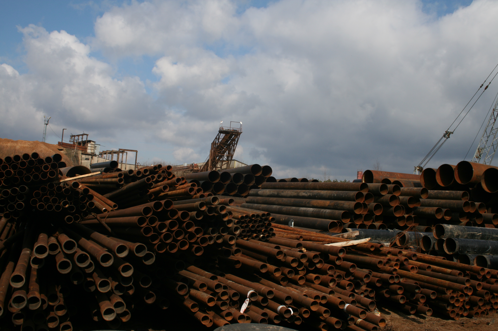
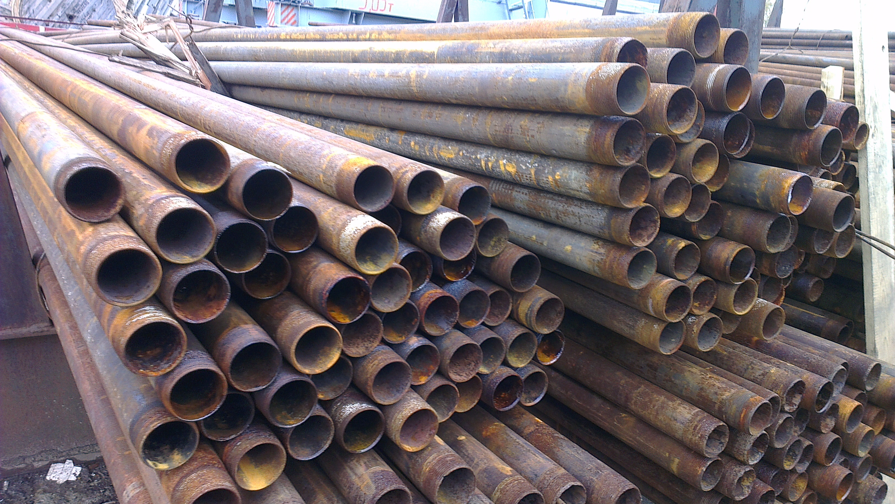
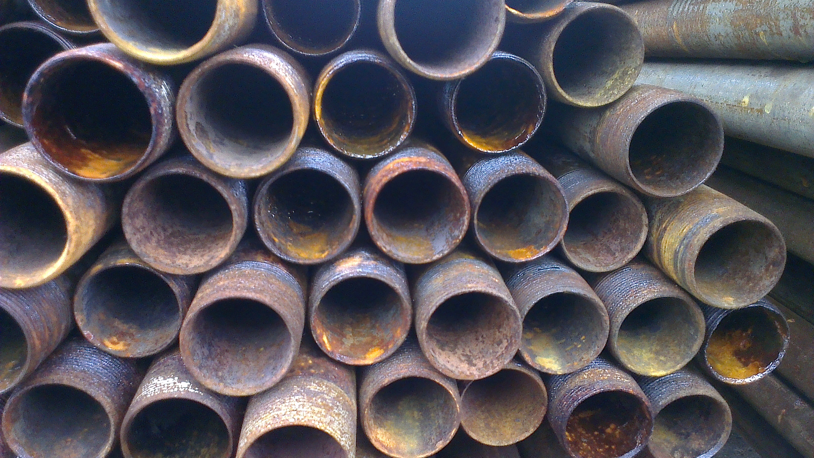
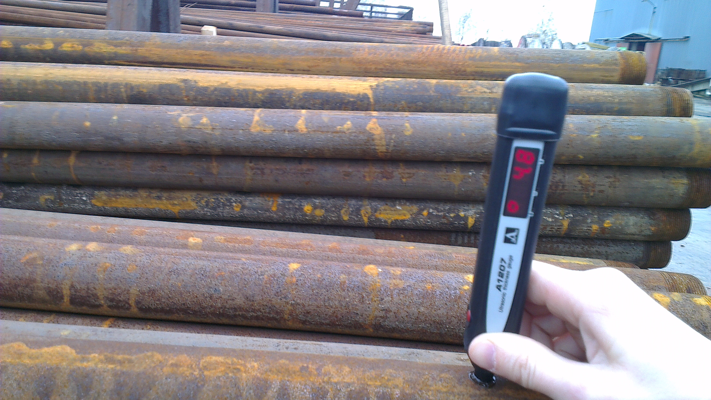
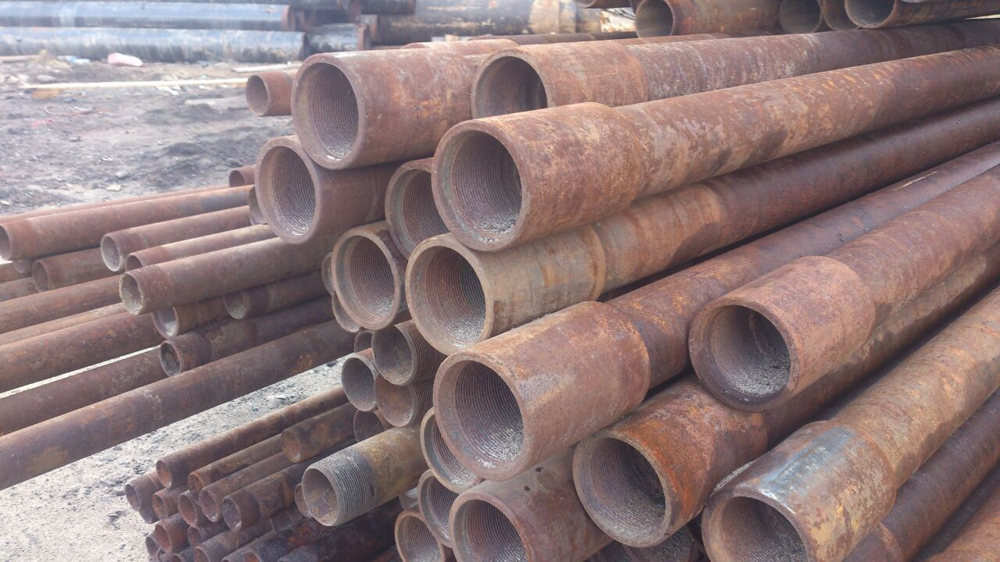
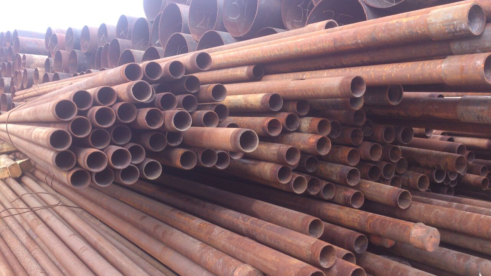
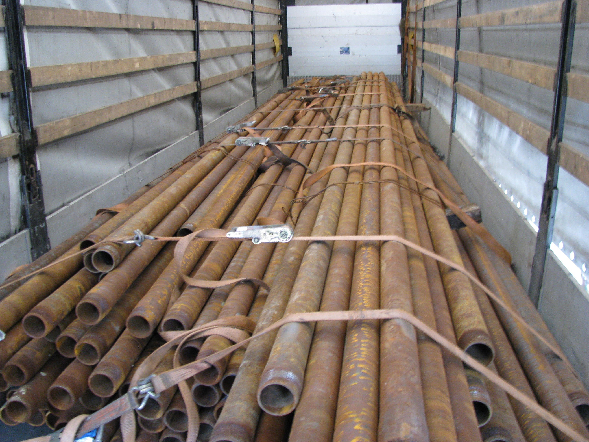
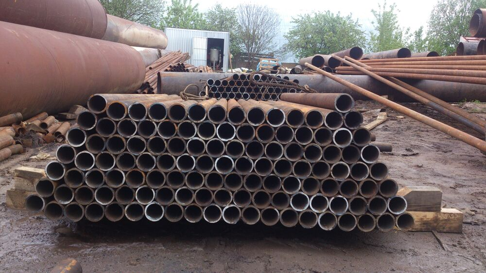
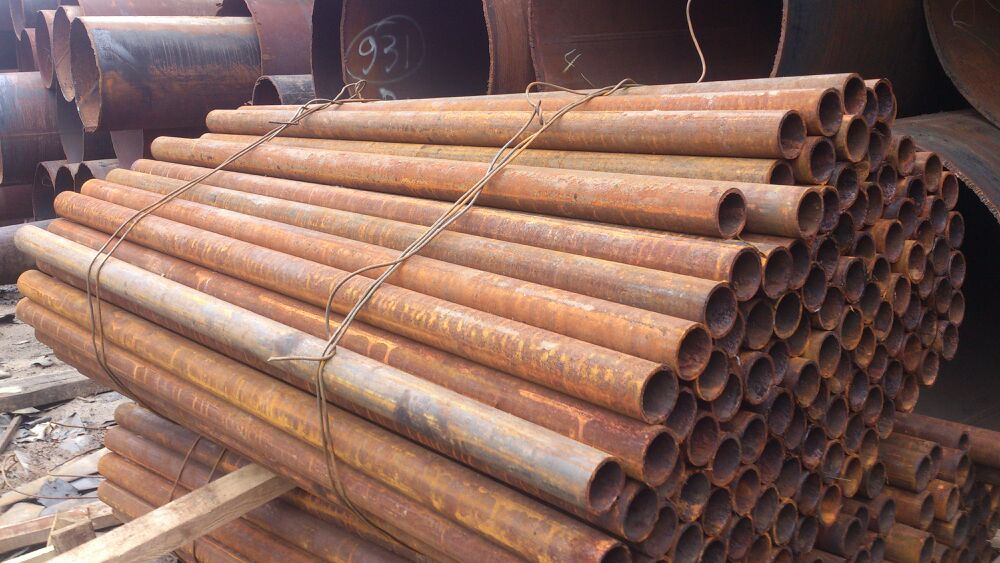
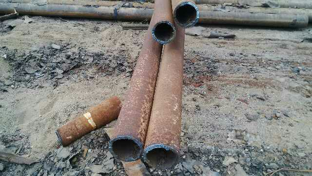
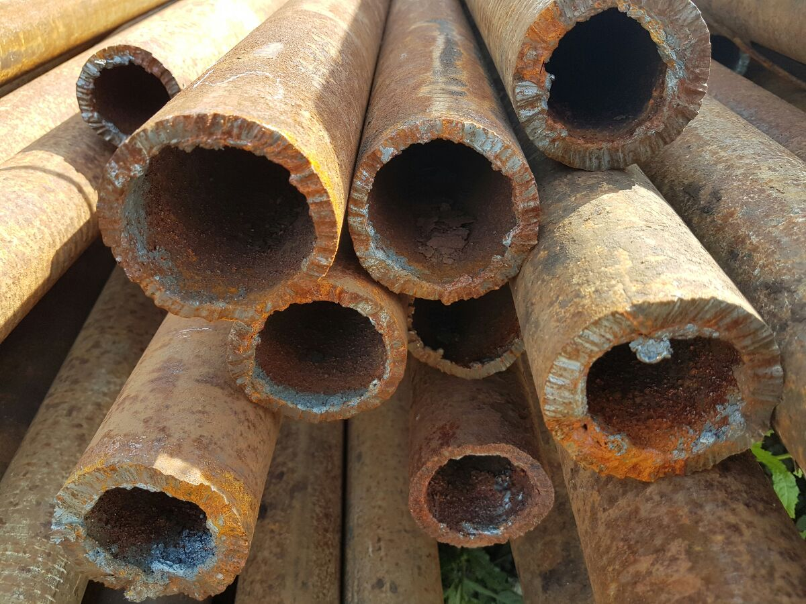
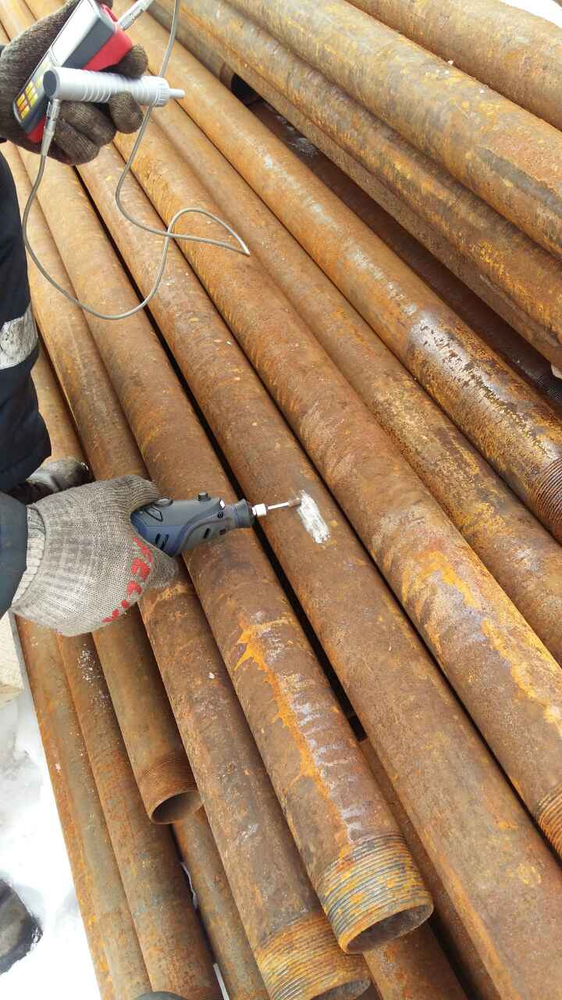
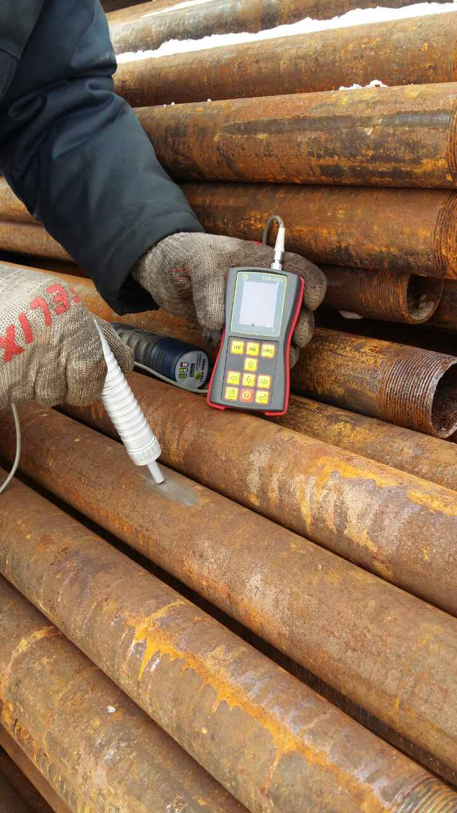
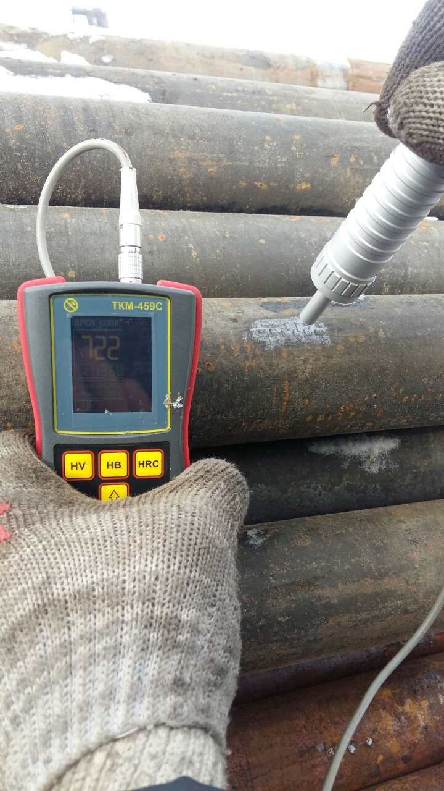
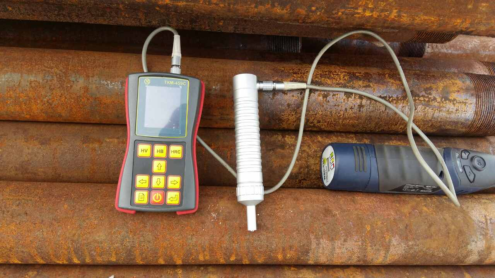
Техническое состояние:
Поскольку трубы производились по российским техническим стандартам и условиям, поэтому НАШИ
продукты соответствуют следующим стандартам:
- Овальность не более 1% диаметра
- Раковины не глубже 1 мм
- Отверстия и тяжелая ржавчина не допускаются
- Кривизна ("банан" не более 0.2% от всей длины)
- Тест на твердость для определения марки стали (N80, J55, K55)
- Разрешается наличие ржавчины
- Допускаются незначительные повреждения (не влияющие на геометрию труб)
- Измерение и контроль толщины стенки с ультразвуковым измерителем не менее чем в 6 точках для каждой трубы
- Радиационные измерения: допускаается значение не более 0,22 микроверз в час